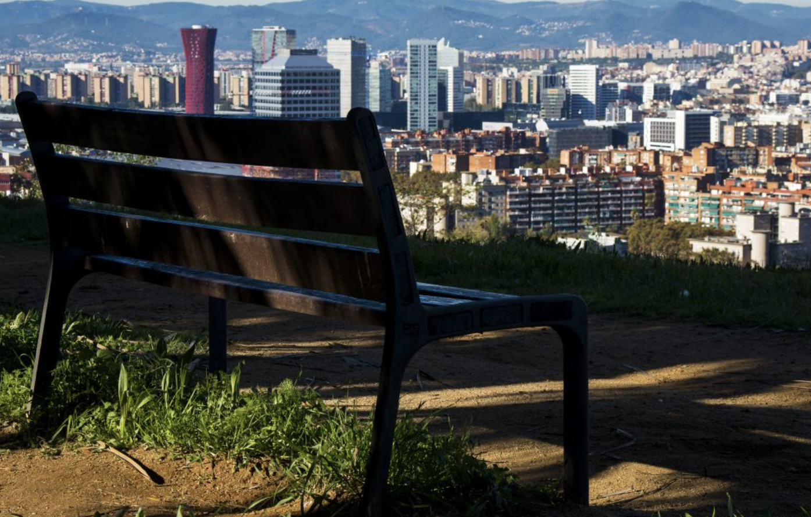

Forside Livsstil Rejser Romantiske byer og feriedestinationer – hvor skal du hen med kæresten?
Du har nok allerede gættet, at Paris er med på vores oversigt over romantiske byer, men hvilke feriedestinationer er ellers gode at rejse til, når kærligheden skal plejes og gro? Vi lover dig, at der er et godt grundlag for en romantisk kærestetur, hvis du vælger en af disse byer til jeres næste rejse.
Ja, du kan ikke sige “romantiske byer” uden at nævne Paris, så hjerternes by er naturligvis nummer et på listen. Faktisk er det praktisk taget umuligt at tage på kæresteferie i den franske hovedstad, UDEN det bliver romantisk.
I behøver ikke planlægge så meget: Tag på café og få en caffe au lait og en croissant og gå så ellers gennem de parisiske gader og sug den franske atmosfære til jer. Derudover skal I selvfølgelig huske at besøge Eiffeltårnet – og finde en restaurant eller bar med udsigt til seværdigheden om aftenen, når der er lys på.
Den er svær at udtale, og det er heller ikke sikkert, du har hørt om den, men du har helt sikkert SET Oia på billeder. Den billedskønne by ligger på klippesiden af den græske ø Santorini og er kendt for de smukke, hvide huse med blå tage og fantastisk udsigt til krydstogtskibe og en aktiv vulkan.
Der er selvsagt meget turistet, men de andre turister er mestendels også forelskede par, der er i Oia for at tage kyssebilleder og se solnedgangen. Byen er et must see, hvis du elsker den græske ferieø-stemning.
ROMA! Tag her til for at hive den indre italiener ud af din kæreste, så I kan få masser af passion på jeres romantiske ferie. Den kan indeholde en afslappende sejltur, et historisk vingesus blandt de mange flotte ruiner og naturligvis et nærmest filmisk besøg på Colosseum.
Husk at få i passende mængder “dele-gelato” og spise spaghetti med kødboller Lady og Vagabonden-style.
Gondoler med traditionelt klædte gondolierer, roligt vand i de flydende gader og masser af stemning, musik og smukke broer. Venedig er kendt som en af verdens mest romantiske byer, og det er nok også grunden til, at så mange mennesker vælge at besøge det smukke sted.
I Venedig er der også rig mulighed for at spise lækker fisk, se på glaskunst og opleve historiske bygninger.
Ja ja, Spanien kan også! Barcelona har nogle af de smukkeste bygningsværker i Europa (se bare på Sagrada Familia), og her kan I både shoppe, være kulturelle og stikke fødderne i havet. Barcelona har det hele plus et rigt byliv, så I kan også sagtens tage i byen og svinge jeres par-lår, mens I stadig kan.
